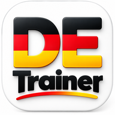

DeutschTrainer
🔥 0
⭐ 0 XP
🇩🇪 DEUTSCHTRAINER
Hallo! 👋
Małe kroki, wielkie postępy.
✨
🎯 Centrum ćwiczeń
Wybierz trening🐾 Twoje zwierzątka
📊 Twój postęp
Skuteczność odpowiedzi0%
Rozpocznij pierwszą lekcję!
0/36Lekcje
0XP
0Seria dni 🔥
⚙️ Więcej ćwiczeń i ustawienia
📚🇩🇪
Twoje lekcje
36 lekcji A1–B1, krok po kroku.
Twoja ścieżka nauki
🗺️ Mapa A1 → A2 → B10/36
Zdobądź 80% poprawnych odpowiedzi, zachowaj przynajmniej jedno z 5 żyć i zalicz test co 5 lekcji, aby przejść dalej.
🎓 A2 i B1
Nowe lekcje pojawią się na ścieżce po ukończeniu A1. Nowe moduły utrwalające mają 15 zadań i próg 80%.
1/15
NIEMIECKI W PRACY
Jak powiesz po niemiecku?
Wybierz poprawną odpowiedź.
Twoje postępy 📊
Każda krótka sesja przybliża Cię do swobodnej rozmowy.
⭐ Zdobyte XP0
📚 Ukończone pytania0
✅ Poprawne odpowiedzi0
🔥 Aktualna seria0 dni
Co już umiesz?
Ukończ pierwszą lekcję, aby zobaczyć wyniki.
Powtórka błędów 🧠
Wróć do pytań, które sprawiły Ci trudność.
Utrwal wiedzę
Po każdej lekcji zapisujemy pytania, w których popełniłeś błąd.